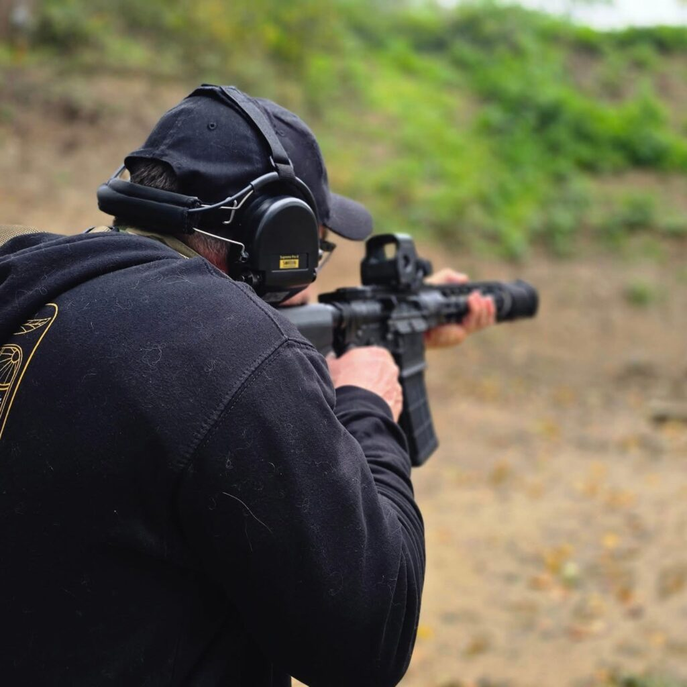
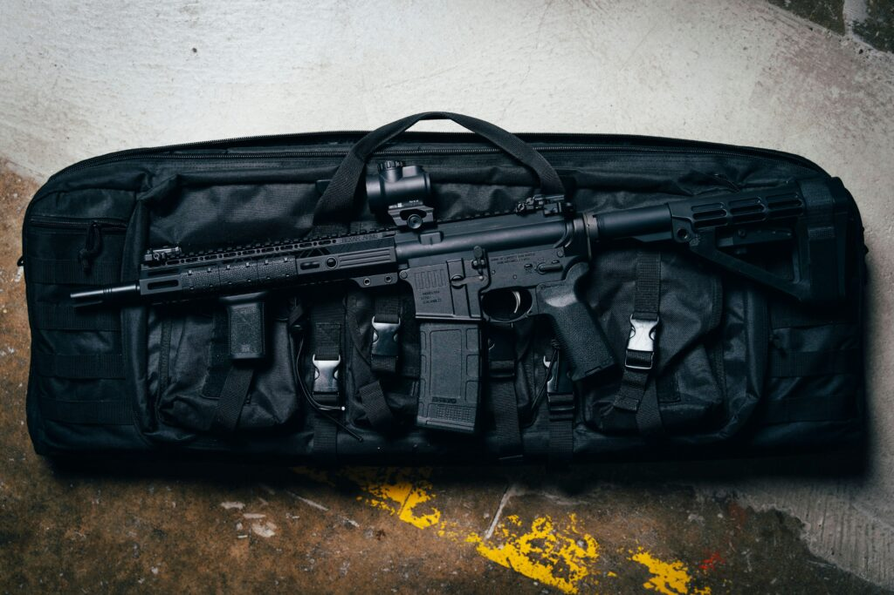
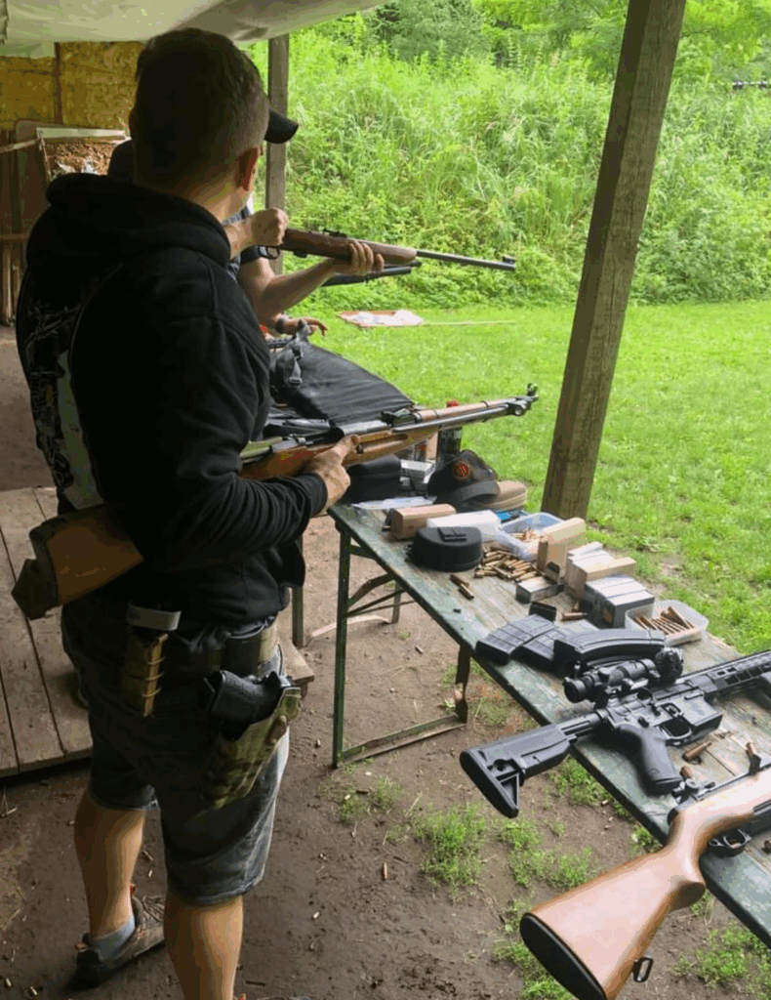
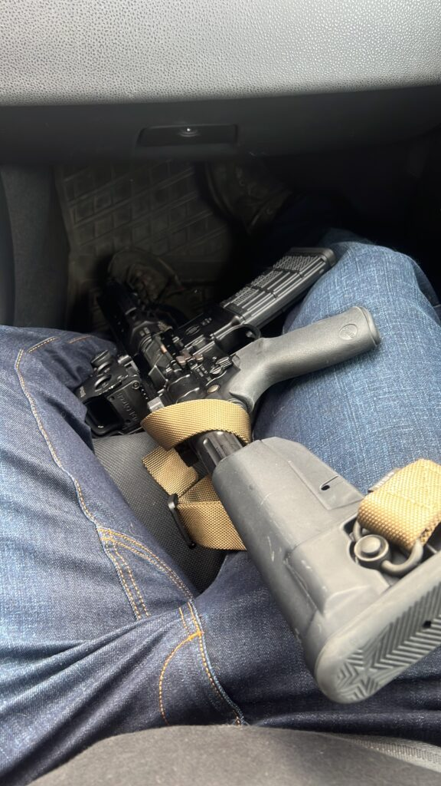
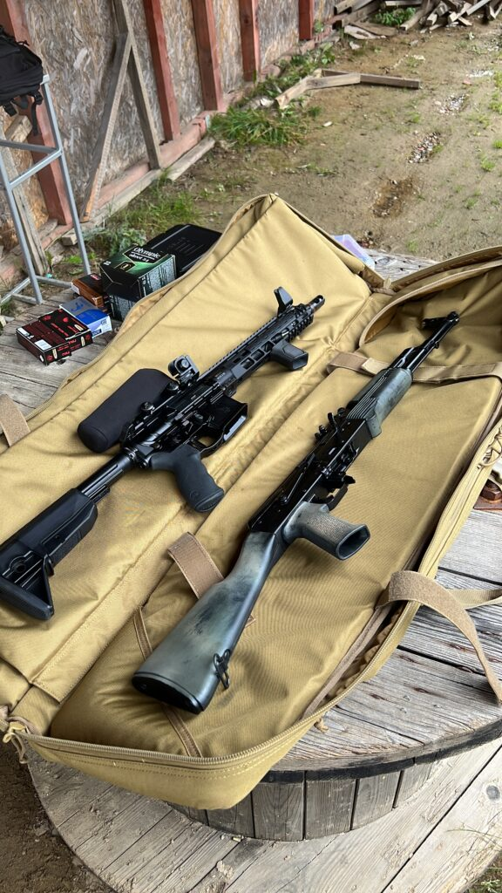
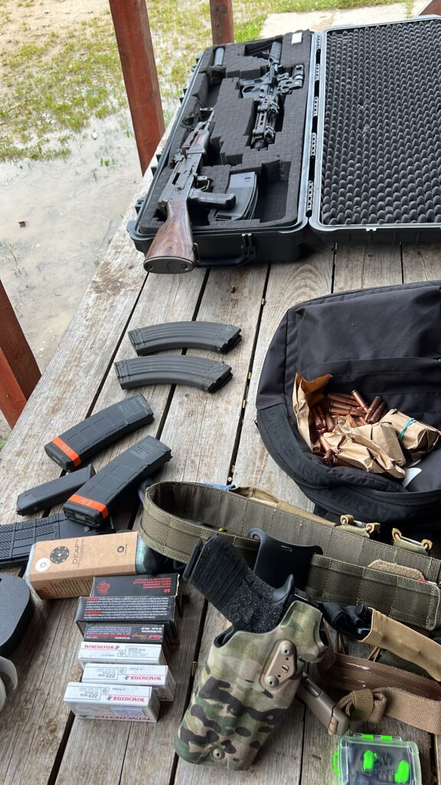

Jak wybrać pierwszy karabinek AR-15? Przewodnik dla początkującego strzelca (2025)
2025-10-07
Dlaczego najpierw trzeba ustalić przeznaczenie karabinka?
Nie ma jednego „najlepszego” AR-15 — liczy się osobisty cel, zamiary i styl strzelania. Zanim zaczniesz szukać, odpowiedz sobie na kilka pytań:
- Czy ten karabinek to narzędzie do sportu (np. IPSC, 3Gun), rekreacji, precyzyjnego treningu (strzelanie na dalszych dystansach) czy bardziej strzelania taktycznego?
- Czy będziesz głównie strzelać statycznie na 50–100 m czy planujesz ćwiczyć np. taktyczne i awaryjne wymiany magazynka (magwell), pracę z karabinkiem przez długie godziny (ciężar, DI , tłok)?

- Jaki realny budżet możesz przeznaczyć na sam karabinek, optykę oraz podstawowe akcesoria?
- Jak ważna jest dla Ciebie możliwość użycia tłumika dźwięku (długość lufy), możliwość modyfikowania oraz dostępność akcesoriów (k-mod, m-lok, hkey)?
- Uczciwe sprecyzowanie tych wytycznych pozwoli uniknąć rozczarowań i skieruje Cię do modeli, które faktycznie spełnią Twoje potrzeby.analizę rynku AR-15
Rynek AR-15 w Polsce: porównanie modeli w czterech segmentach cenowych
Jest październik 2025 roku polski rynek AR-15 jest bardziej zróżnicowany niż kiedykolwiek — sprzedawcy oferują szeroki wybór zarówno budżetowych „gotowców”, jak i zaawansowanych konstrukcji dla sportowców, kolekcjonerów i niedzielnych komandosów.
Jeszcze krótko o systemie w AR15 ,
System DI (Direct Impingement) w karabinku jest lżejszy, tańszy i daje łagodniejszy odrzut, ale szybciej brudzi mechanizm zamka i wymaga częstszego czyszczenia.porównanie systemów gazowych
System tłokowy pozwala na czystsze działanie (gazy i nagar zostają bliżej tłoka), ale jest droższy, cięższy i bardziej skomplikowany mechanicznie.porównanie systemu tłokowego i DI

W skrócie: DI = lżejszy, prostszy, ale brudniejszy karabinek; tłok = czystszy, cięższy, droższy karabinek
Segment 3 000–6 000 zł: Karabinki na start
Najlepszy wybór dla osób chcących zacząć strzelać i ponieść możliwie najniższe koszty. Te karabinki wymagają zwykle lekkiego tuningu, ale są najchętniej i chyba najczęściej polecana na naszej grupie w tym przedziale cenowym. (ceny sprawdzałem na szybko może są jakieś promocje, umówmy się, że to ceny poglądowe)
| Model | Cena (zł) | Kluczowe cechy | Uwagi |
| ST-15 (Southern Tactical) | 3 600–4 990 | MIL-SPEC, grube lufy 10,5–16″, lekki, magazynek w zestawie | Król budżetu, wiele wersji luf, dosyć duża dostępnośćofertę ST-15 |
| ZRO Delta 01 AR-15 | 3 250 | 1:9, kuta na zimno, komora .223 wylde | Nowość, najniższa cena |
| SOG Entry AR-15 | 3 490–3 500 | Kompletny mil-spec, regulowany blok gazowy, lufy 12,5–16″ | Najniższa cena, szybka sprzedaż serii, dobre opinie |
Wskazówka:
W tym segmencie szczególnie liczy się potencjał do tuningu — kolba, chwyt, mechanizm spustowy. Wszystkie trzy jednostki to nowoczesne rozwiązania, są łatwe w serwisie, tanie w eksploatacji. Idealne na początek do strzelania sportowego i rekreacyjnego.
Segment 6 000–9 000 zł:
Tu jakość rośnie, pojawia się lepsza lufa, wyższa klasa spasowania i gotowość do zawodów lub intensywnego treningu.
| Model | Cena (zł) | Kluczowe cechy | Uwagi |
| IWI Zion-15 | 7 500 | Solidny, system DI, różne długości luf | Sprawdzone recenzje i niezła dostępnośćanalizę segmentu średniego |
| Milicon SPARTAN | 6 410–7 490 | Polska produkcja, dobre lufy, uniwersalny | Elastyczna baza pod zawodyofertę karabinków AR-15 |
| LFA Battle Rifle | 7 900 | Kompakt, niska masa, | Nowa konstrukcja, dużo chłopaków i chwali |
W tym przedziale warto celować w modele, które sprawdzą się zarówno na torze, jak i do ćwiczeń dynamicznych. Bardzo dobre opinie strzelców i sensowna baza pod docelowy tuning.
Segment 9 000–13 000 zł: już wyższa półka cenowa
To już wybór dla kogoś, kto chce wydać więcej i dostać coś z wyższą jakością lufy i spasowania, przygotowanego pod zawody oraz dużą intensywność użytkowania.
| Model | Cena (zł) | Kluczowe cechy | Uwagi |
|---|---|---|---|
| Aero Precision M4E1 | 10 500–11 900 | Bardzo dobra jakość, tight fit, łoże M-LOK | Ceniony za precyzję, gotowy pod tuning, znane lufy USA, niestety maja kłopoty i ciężko dostępny |
| Rock River Arms LAR-15 | 10 900 | Solidny zespół spustowy, ceniony w USA | DI,kuty, dobra jakos stali, popularny w IPSC/3Gun |
| Faxon Ascent | 9 900–11 300 | Lekka konstrukcja, lufa z własnej produkcji Faxona | Świetna ergonomia, custom spust, dobre materiały |
Wskazówka:
W tym segmencie zwróć uwagę na spust, jakość łoża i możliwość personalizacji. Niektóre modele są już gotowe pod zawody — to minimalizuje koszty dalszych wydatków.
Segment 13 000–20 000 zł: Topowy AR-15 dla najbardziej wymagających
Karabinki dla osób które są bardzo wymagające, zawodników i tych, którzy chcą wydaj więcej. Najlepsze materiały, tuning od nowości, bezawaryjność.
| Model | Cena (zł) | Kluczowe cechy | Uwagi |
|---|---|---|---|
| Daniel Defense MK18 | 12 990–14 600 | kuta na zimno lufa, 10,3″/10,5″ kompakt, Mil-Spec, CQB | Najpopularniejszy USA CQB, dostępny w kilku sklepach |
| JP Enterprises JP-15 (Ultralight/Match Ready) | 14 999–15 900 | Lekka komora, custom lufa, spust JP | Topowa platforma sportowa, wersje Ultralight/Match |
| Knight’s Armament SR-15 Mod 2 | 18 600–22 900 | Militarny high-end, kuta lufa, jakość | Najwyższa półka AR15, dostępność wyłącznie na zamówienie |
| Heckler & Koch MR223 A3 | 12 300–13 900 | Niemiecka precyzja, tłokowy system gazowy | Klasa premium, używany przez służby, wersje 11″/16.5″ |
Wskazówka:
Często w tej klasie można wynegocjować zniżki i wsparcie rusznikarza np. w montażu optyki itd. Są to karabinki do intensywnego użycia zawodniczego — sprawdzony przez najlepszych.
Podsumowanie
Na co zwrócić uwagę przy wyborze pierwszego AR-15?
Długość lufy — wybierasz swój styl strzelania
Lufa to podstawa. Krótka, np. 10,5″–12,5″ sprawdzi się w ciasnych miejscach, CQB, dynamicznych ćwiczeniach klubowych.
Taka ARka świetnie leży w ręce, można nią wygodnie pracować w aucie, szybciej reagować na zmiany celów, a do tego dorzucając tłumik, nie zamieniamy broni w „dzidę”.

Lufa 16″ czy 18″ to już propozycja pod strzelanie na dalsze dystanse – tarcza 200–300 m, rekreacja na otwartym polu, zawody precyzyjne. Im dłuższa lufa, tym lepsza kontrola nad kulą – więcej prędkości, stabilności.
System gazowy — lekkość kontra wygoda czyszczenia
Direct Impingement (DI, klasyczny gazowy) jest lżejszy i prostszy – można ćwiczyć cały dzień na torze, z mniejszym efektem „zmęczonych rąk”. Im dłużej biegasz z DI, tym docenisz wagę – jak mówią na mądrzejsi: „gramy robią kilogramy, a kilogramy męczą ręce”.
System tłokowy? Cięższy, bardziej pancerny, o wiele mniej się brudzi. To wersja dla tych, którzy nie lubią rozkręcać zamka co tydzień, albo nie mają warunków na szorowanie broni po każdym treningu. W zamian za wagę dostajesz dużo mniej syfu i brudu w komorze — czyli trochę więcej świętego spokoju.
Ergonomia – chwyt i kolba robią różnicę!
Standardowy chwyt AR-15 to plastikowy kij z kątem „trochę jak u staruszka” – niby działa, ale z czasem irytuje przy dłuższym strzelaniu. Warto rozglądać się za lepszym, szerszym, bardziej ergonomicznym, który mieści całą dłoń, ma bieżnik, nie ślizga się, a kąt pasuje do Twojej łapy.
Kolba? Szersza, wygodna, nie telepie się przy każdym strzale. Jeśli planujesz strzelać w kamizelce, chcesz wygodnie składać się do optyki, wybierz coś pewnego. Po pierwszym strzelaniu poczujesz różnicę.
Na koniec:
Pierwszy AR-15 to nie tylko cena, ale po prostu wygoda dla Ciebie. Przemyśl przeznaczenie, długość lufy, system gazowy, chwyty oraz kolbę. Zrobisz to raz sensownie, to broń będzie „uczciwie robić robotę”, zamiast denerwować na torze.
Konsultuj na grupie, oglądaj co mają koledzy i testuj pod swoimi warunkami. Dobór idealnego AR-15 to nie tylko kwestia ceny, ale przede wszystkim praktycznego dopasowania do Twojego stylu strzelania.



Najtańsze ST-15, MU-15 i SOG Entry są bezpieczną opcją na start, a ich realna cena pozwala dokupić optykę i akcesoria już od pierwszego dnia., na co warto zwrócić uwagę, może jesteś w stanie przeżyć tańszy karabinek, żeby wrzucić na niego droższą optykę?
Wyższe segmenty zapewniają lepszą lufę, spasowanie, gotowość pod zawody, a często także indywidualny tuning.
Praktyka pokazuje, że najważniejsze to mieć pomysł jak będziesz używać karabinka — inwestowanie w markę ma sens jeśli kogoś na to stać i chce mieć coś „pięknego”.
Polecam regularnie przeglądać naszą grupę (bronpalnapolska) i stronę (bronpalnapolska.pl), a także zadawać pytania na kanale — szybciej uzyskasz odpowiedz oraz pomysły na konfiguracje dopasowane do Twoich potrzeb.
Mam nadzieję, że rozjaśniłem Wam temat i teraz już będzie łatwiej.
KuDłacz
#ŁączyNasCel